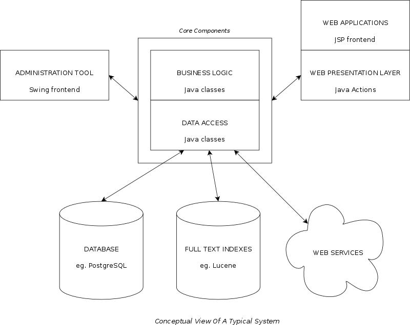

Source Code
The classes in a typical enterprise application are structured into three architectural tiers - data access, business logic and presentation. Examples of data access classes include those that communicate with a persistent store such as a relational database. Examples of business logic classes include those that perform a card payment. In this framework, web applications implement Action classes that act as controllers, marshaling parameters and forwarding them to business logic and/or data access classes. The business logic and data access classes return classes that are used as data models for presentation via View classes. The data access and business logic classes are not bound to a specific presentation technology such as JSP, Velocity or XSLT, allowing for simpler testing and reuse. Examples of different presentation technologies include Swing and JavaFX.

Framework
The bulk of the code base in a typical application is composed of data
access, service and business logic classes that are combined into an application
by a lightweight dependency injection framework. This framework is found in the
net.chriswareham.di package, and is based around the
net.chriswareham.di.ComponentFactory interface. This
interface is implemented by the
net.chriswareham.di.DefaultComponentFactory class, which
processes a simple XML configuration file. A minimal configuration file can be
found here, and conforms to the
Components DTD. It contains declarations for each
data access, service and business logic class that makes up the application, as
shown in the following example:
<components>
<component id="dataSource" class="org.postgresql.ds.PGSimpleDataSource">
<property name="serverName" value="localhost"/>
<property name="portNumber" value="5432"/>
<property name="databaseName" value="test"/>
<property name="user" value="username"/>
<property name="password" value="p4ssw0rd"/>
</component>
<component id="dataSourceWrapper" class="net.chriswareham.da.DataSourceImpl">
<property name="dataSource" refid="dataSource"/>
<property name="minIdle" value="0"/>
<property name="maxIdle" value="25"/>
<property name="maxActive" value="-1"/>
<property name="maxWait" value="-1"/>
</component>
<component id="queryService" class="net.chriswareham.da.QueryServiceImpl">
<property name="dataSource" refid="dataSourceWrapper"/>
</component>
<component id="venueDao" class="com.test.dao.VenueDaoImpl"/>
<component id="venueService" class="com.test.service.VenueServiceImpl">
<property name="queryService" refid="queryService"/>
<property name="cacheEnabled" value="true"/>
<property name="purgeTime" value="60"/>
<property name="purgeFrequency" value="5"/>
<property name="venueDao" refid="venueDao"/>
</component>
</components>
A component has an id, which must be unique within the configuration, and can have properties that are either a value (a Java primitive type) or a reference to the id of a previously declared component. Properties should be exposed by the implementing class as JavaBean setters, which must not be overloaded. This is known as Type 2 or Setter Injection. As well as single values, lists and maps of values or references can be declared as follows:
<component id="venueCreator" class="com.test.app.VenueCreatorImpl">
<property name="venueService" refid="venueService">
<property name="maxDescriptionLength" value="2000">
<list name="permittedCategories">
<item value="guesthouse"/>
<item value="hostel"/>
<item value="hotel"/>
</list>
<map name="priceBands">
<entry key="0" value="budget"/>
<entry key="100" value="economy"/>
<entry key="200" value="premium"/>
</map>
</component>
Properties can also be exposed as constructor arguments. This is known as Type 3 or Constructor Injection. This can be mixed with setter injection if desired, although this constructor injection was implemented mainly as way of integrating third party objects without needing to write wrappers. For example, a components file for a JMS events implementation using ActiveMQ can be found here.
To initialise a component factory, an instance of a class implementing the
net.chriswareham.di.ResourceResolver interface must be
passed to the setResourceResolver() method, and the name of the
configuration file passed to the setComponentResource() method. The
default component factory also implements the net.chriswareham.di.LifecycleComponent
interface, which defines start() and stop() method
signatures. When the default component factory's start() method is
called, the resource resolver is used to return an input stream for reading the
configuration file. The configuration file is parsed, and the components that
make up the application are initialised with parameters and references to other
components (dependency injection). Once all components are initialised, those
that implement the LifecycleComponent interface have their start()
methods called. On shutdown of the application, the stop() method
of the default component factory is called, which in turn calls the stop()
methods of the components that implement the LifecycleComponent
interface. As well as implementing dependency injection, a component factory can
act as a registry for looking up components programmatically with the following
method:
/**
* Get a component of a specific type.
*
* @param <T> the type of the component
* @param name the name of the component
* @param type the type of the component
* @return the component
* @throws ComponentException if the component of the specific type does not exist
*/
<T> T getComponent(String name, Class<T> type) throws ComponentException;
Components can optionally be declared with an instantiation
attribute, which can take the values immediate or demand.
The default is demand, which means the component will be
instantiated at startup, whereas components declared demand will
not be instantiated until they are either referenced by another component or are
programmatically looked up. This allows components to be declared without
consuming memory or other resources if they are not necessarily used during the
lifetime of an application. For example, a standalone application could be
declared in a configuration file, and that file used by both a web application
and the standalone application:
<component id="venueLoader" class="com.test.app.VenueLoaderImpl" instantiation="demand">
<property name="venueService" refid="venueService">
</component>
There are also classes that implement pooling for database connections and
caching of objects both in memory and on disk. Database connections are accessed
via the javax.sql.DataSource interface, which has the following
method:
/**
* Get a connection from the data source.
*
* @return a connection from the data source
* @throws SQLException if an error occurs
*/
Connection getConnection() throws SQLException;
A pooling implementation is provided by the net.chriswareham.da.DataSourceImpl
class, which uses the Apache Commons Pool and DBCP libraries.
Cache classes implement the net.chriswareham.da.Cache interface,
which has the following methods:
/**
* Fetches an object.
*
* @param id the id of the object to fetch
* @return the object, or null if it is not cached
*/
T fetch(I id);
/**
* Stores an object.
*
* @param id the id of the object to store
* @param obj the object to store
*/
void store(I id, T obj);
/**
* Flushes and stores an object.
*
* @param id the id of the object to flush and store
* @param obj the object to flush and store
*/
void flushAndStore(I id, T obj);
/**
* Flushes an object.
*
* @param id the id of the object to flush
*/
void flush(I id);
/**
* Flushes all objects from the cache.
*/
void flush();
A common pattern is to wrap a data access class in a service class, and have the service class manage caching and transaction boundaries.
A framework for implementing the MVC (Model View Controller) pattern in web
applications can also be found in the net.chriswareham.mvc
package. It is similar to other MVC frameworks such as the ones found in Spring
and Struts. An implementation of the Front Controller pattern is
provided by the net.chriswareham.mvc.ControllerFilter class.
When a web application is initialised, the front controller reads the
definitions of interceptors, actions (controllers in the MVC
pattern) and views. These interceptors, actions and views are defined
in a configuration file that uses the same XML format as the dependency
injection framework:
<component id="authenticatingInterceptor" class="com.test.web.AuthenticatingActionInterceptor">
<property name="userDao" refid="userDao"/>
<property name="cookieName" value="User"/>
<property name="cookieDomain" value=".example.com"/>
<property name="cookiePath" value="/"/>
<property name="cookieMaxAge" value="315360000"/>
</component>
<component id="venueAction" class="com.test.web.VenueFinderAction">
<property name="path" value="/venues"/>
<property name="venueDao" refid="venueDao"/>
<property name="viewName" value="venueView"/>
</component>
<component id="venueView" class="net.chriswareham.mvc.JspView">
<property name="path" value="/venue.jsp"/>
</component>
The configuration file format also supports an include mechanism, which can be used to pull in definitions of the business logic and data access components used across all applications:
<include path="/WEB-INF/classes/components.xml"/>
Controllers implement the net.chriswareham.mvc.Action interface, which defines the following method:
/**
* Handle a request.
*
* @param request holds data for the request
* @return the view name and models for the response
* @throws ActionException if an error occurs
*/
ActionResponse action(ActionRequest request) throws ActionException;
The ActionRequest passed as the sole argument to the
action() method is an interface for a transfer object that contains
data such as HTTP post parameters and extended path information, in a convenient
format. For instance, integer parameters submitted via a form can be accessed
through the following typed methods in the ActionRequest
interface:
/**
* Gets an integer value from a parameter. Returns 0 if a parameter of the
* requested name does not exist, or if an integer cannot be parsed from the
* parameter string.
*
* @param name the name of the parameter
* @return the integer value of the parameter
*/
int getIntegerParameter(String name);
/**
* Gets an integer value from a parameter. Returns the specified default
* value if a parameter of the requested name does not exist, or if an
* integer cannot be parsed from the parameter string.
*
* @param name the name of the parameter
* @param def the default value
* @return the integer value of the parameter
*/
int getIntegerParameter(String name, int def);
The framework provides a default implementation of the
ActionRequest interface in the form of the
DefaultActionRequest class.
The ActionResponse returned by the action() method
is a transfer object for cookies, data models and a named view that will render
the data models. Views implement the net.chriswareham.mvc.View
interface, which defines the following method:
/**
* Render models.
*
* @param models the models
* @param request the client request
* @param response the servlet response
* @param context the servlet context
* @throws IOException if an input or output error occurs
* @throws ServletException if a servlet error occurs
*/
void render(Map<String, Object> models,
ServletRequest request,
ServletResponse response,
ServletContext context)
throws IOException, ServletException;
The framework provides an implementation of the View interface
that supports rendering models via a JSP, as well as additional implementations
that can return a byte stream with a MIME type header, the models serialised as
JSON or perform a redirect.
Data Access And Business Logic Tiers
The data access and business logic tiers define an API (Application Programming Interface) which are a set of Java methods defined in interfaces. These interfaces define a contract between the API user and concrete implementations of the interfaces. As an example, the following interfaces provide an API for dealing with users:
package com.test.dao;
import java.util.List;
import net.chriswareham.da.QueryConnection;
import com.test.model.User;
public interface UserDao {
List<User> search(QueryConnection connection, UserSearchCriteria criteria);
User read(QueryConnection connection, int userId);
User read(QueryConnection connection, int userId, String passwordHash);
void create(QueryConnection connection, User user);
void update(QueryConnection connection, User user);
void delete(QueryConnection connection, int userId);
}
package com.test.service;
import java.util.List;
public interface UserService {
List<User> search(UserSearchCriteria criteria);
User read(int userId);
User read(int userId, String passwordHash);
void create(User user);
void update(User user);
void delete(int userId);
}
This is a typical example of the CRUD (Create, Read, Update, Delete) pattern often used to access a persistent store such as a database, or remote resources such as web services. As can be seen in the example, this pattern is often augmented with a search method, which takes a transfer object as an argument. The transfer object is also defined in terms of an interface to a JavaBean, which aggregates search parameters in order to simplify the signatures of methods that would otherwise need many arguments. Modifications to the information stored in a transfer object can also be made without needing to alter the signatures of methods that take such objects as arguments. The user information is also aggregated into a JavaBean, which opens up the possibility of using sophisticated Java features such as reflection and serialisation. As an example, the following class defines a user bean:
package com.test.model;
import java.io.Serializable;
public class User implements Serializable {
private int userId;
private String userName;
private String emailAddress;
public int getUserId() {
return userId;
}
public void setUserId(final int ui) {
userId = ui;
}
public String getUserName() {
return userName;
}
public void setUserName(final String un) {
userName = un;
}
public String getEmailAddress() {
return emailAddress;
}
public void setEmailAddress(final String ea) {
emailAddress = ea;
}
}
A robust bean implementation should override the toString(),
equals() and hashCode() methods inherited from the
Object class, and may implement the compareTo() method
from the Comparable interface. For example:
@Override
public int compareTo(final User user) {
return userName == null ? user.userName == null ? 0 : 1 : userName.compareTo(user.userName);
}
@Override
public String toString() {
return userName;
}
@Override
public boolean equals(final Object obj) {
if (obj == this) {
return true;
}
if (!(obj instanceof User)) {
return false;
}
User user = (User) obj;
return userId == user.userId;
}
@Override
public int hashCode() {
return userId;
}
Web Presentation Tier
A web presentation tier uses the actions and views framework, with actual
templates written as Java Server Pages. The JSP technology provides a
simple templating language that allows the mixing of XHTML markup with
additional XML elements that provide processing instructions for data models
created by the data access and business logic tiers. Support for scriptlets
(actual Java code embedded in a JSP) should be disabled, as they are deprecated
in favour of the Java Standard Tag Library, augmented where necessary by a small
library of custom tags in the net.chriswareham.mvc.tags package.
The JSTL tags are the additional XML elements added to the XHTML in a JSP to
provide control structures for looping or branching as well as utility methods
for localisation and escaping of user supplied text. The custom tags provide
additional functionality specific to web applications. The JSP templates compile
down to simple Java code which is in turn compiled down to byte code and
executed inside a web application container. For live deployment, the
JSP templates are precompiled down to byte code, allowing for a faster startup of
the container, as it needs to do no compilation of the templates itself. For
development, the JSP templates are compiled on the fly by the container,
allowing for a faster development cycle.
In addition to a web presentation tier that generates XHTML for display in a
browser, actions can be written to return XML in formats such as SOAP or RSS.
This can provide web services that allow third parties to integrate a subset of
functionality into their own applications by using the
net.chriswareham.mvc.ByteArrayView or
net.chriswareham.mvc.JsonView classes.
GUI Presentation Tier
A GUI (Graphical User Interface) presentation tier can utilise classes in the
net.chriswareham.gui package. In addition to data entry widgets,
these classes add extra type safety via generics and encourage proper use of an
MVC abstraction.
Future Enhancements
There are currently stubs in the framework's cache classes for cache invalidation via an events system. This has been implemented in the past using a CORBA (Common Object Request Broker Architecture) Event service. However, in a completely Java based system, a JMS (Java Message Service) implementation is a more obvious choice. As well as allowing for invalidation of objects in the caches, a generic events system can form the basis of a push based syndication service.
Bibliography
Core J2EE Patterns Alur, Malks, Crupi (Prentice Hall, 2003 ISBN 0131422464).
J2EE Design And Development Johnson (Wrox, 2003 ISBN 0-7645-4385-7).
J2EE Development Without EJB Johnson, Hoeller (Wrox, 2004 ISBN 0-7645-5831-5).
Patterns Of Enterprise Application Architecture Fowler et. al. (Addison Wesley, 2003 ISBN 0-321-12742-0).